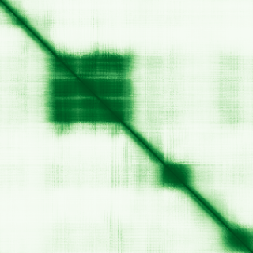

type: protein-evaluation gene: "TIPIN" date: 2026-06-02 tags: [protein-scout, nucleus-cytoplasm, evaluation] status: scored ---
TIPIN 核蛋白评估报告
1. 基本信息
| 项目 | 内容 |
|---|---|
| 基因名 / 别名 | TIPIN / FLJ20516 |
| 蛋白全名 | TIMELESS-interacting protein |
| 蛋白大小 | 301 aa / 34.6 kDa |
| UniProt ID | Q9BVW5 |
2. 评分总览
| 维度 | 得分 | 权重 | 加权后 | 关键证据摘要 |
|---|---|---|---|---|
| 核定位特异性 | 4/10 | ×4 | 16.0 | Cytoplasm + Nucleus (ECO:0000269); GO nucleoplasm TAS, nucleus IDA, chromatin IDA |
| 蛋白大小 | 10/10 | ×1 | 10.0 | 301 aa, 34.6 kDa, 处于理想范围 |
| 研究新颖性 | 6/10 | ×5 | 30.0 | PubMed strict=59, symbol_only=146, broad=150 |
| 三维结构 | 8/10 | ×3 | 24.0 | 3 PDB (7PFO/7PLO/8B9D, EM 2.80-3.40A) + AF pLDDT=66.8 |
| 调控结构域 | 5/10 | ×2 | 10.0 | 3 domains (2 InterPro + 1 Pfam): Csm3/Swi3, replication fork |
| PPI 网络 | 5/10 | ×3 | 15.0 | IntAct 15 + STRING N/A + UniProt 5; TIMELESS, RPA, replisome |
| 加权总分 | 105/180** | |||
| 互证加分 | +0.5 | PDB+AF 互证(+0.5) | ||
| 归一化总分 (÷1.83) | 57.4/100** |

3. 详细分析
3.1 核定位证据
| 来源 | 定位 | 可信度 |
|---|---|---|
| UniProt | Cytoplasm (ECO:0000269); Nucleus (ECO:0000269, 3次) | 强实验证据 |
| GO-CC | chromatin IDA; cytoplasm IEA; nucleoplasm TAS; nucleus IDA; replication fork protection complex IBA | 实验+预测 |
| Protein Atlas (IF) | HPA 有 IHC/RNA 数据但 IF 未获取 | 未确认 |
HPA IF 状态: HPA IF 原图未可靠获取（HPA检索页无可用的subcellular IF原图）。核定位基于HPA localization/reliability + UniProt + GO-CC。 — Nucleus 定位有多个 ECO:0000269 + IDA 证据。Chromatin 定位有 IDA 证据。核定位置信度高。
结论: Nucleus 有强实验证据 (3 x ECO:0000269 + IDA)。Chromatin 和 nucleoplasm 定位进一步确认核内分布。Cytoplasm 定位也存在。
3.2 结构与结构域
| 指标 | 数值 |
|---|---|
| AlphaFold | AF-Q9BVW5-F1 (v6) |
| 平均 pLDDT | 66.8 |
| pLDDT >90 / 70-90 / 50-70 / <50 | 18.6% / 25.6% / 26.6% / 29.2% |
| PDB | 7PFO (EM 3.20A, L=1-301), 7PLO (EM 2.80A, L=1-301), 8B9D (EM 3.40A, L=1-301) |
| 来源 | 结构域 |
|---|---|
| InterPro | IPR012923 (Csm3), IPR040038 (TIPIN/Csm3/Swi3) |
| Pfam | PF07962 (Swi3) |
评价: 3个 EM 实验 PDB 结构覆盖全长(均在 human replisome 中解析)。AF pLDDT 66.8 偏低(29.2% <50)，但实验结构可直接使用。Csm3/Swi3 结构域是 replication fork protection 关键模块。蛋白较小(301 aa)，结构域简洁。
3.3 研究现状
| 指标 | 数值 |
|---|---|
| PubMed strict | 59 |
| PubMed symbol_only | 146 |
| PubMed broad | 150 |
关键文献: 1. Petropoulos M et al. (2024). "Transcription-replication conflicts underlie sensitivity to PARP inhibitors." *Nature*. PMID: 38509368 2. Jones ML et al. (2021). "Structure of a human replisome shows the organisation and interactions of a DNA replication machine." *EMBO J*. PMID: 34694004 3. Baris Y et al. (2022). "Fast and efficient DNA replication with purified human proteins." *Nature*. PMID: 35585232 4. Sebastian R et al. (2025). "Mechanism for local attenuation of DNA replication at double-strand breaks." *Nature*. PMID: 39972127 5. Kemp MG et al. (2010). "Tipin-replication protein A interaction mediates Chk1 phosphorylation by ATR in response to genotoxic stress." *J Biol Chem*. PMID: 20233725
评价: DNA replication/replication stress 领域经典蛋白。symbol_only=146 (部分为 tip-in 等其他含义)，strict=59 更准确。近年来持续有高影响力论文(Nature, 2022-2025)。
3.4 PPI 网络
UniProt 实验互作:
| Partner | Experiments | Relevance |
|---|---|---|
| TIMELESS | 4 | Core partner, fork protection complex |
| RPA2 | 4 | ssDNA binding, ATR-CHK1 pathway |
| GSC2 | 3 | — |
| SPRED1 | 3 | MAPK pathway |
| TEX11 | 3 | Meiotic recombination |
IntAct 验证互作:
| Partner | 方法 | PMID | Relevance |
|---|---|---|---|
| BCLAF1 | TAP | 20360068 | DNA damage, apoptosis |
| RPA2 | TAP | 20360068 | Replication protein A |
| THRAP3 | TAP | 20360068 | Transcription coregulator |
| TIMELESS | TAP | 20360068 | Fork protection complex |
| MCM3 | anti tag coIP | 28514442 | Replicative helicase |
| GINS1 | anti tag coIP | 28514442 | Replisome component |
| GINS4 | anti tag coIP | 28514442 | Replisome component |
| SUPT16H | anti tag coIP | 28514442 | FACT complex, chromatin |
已知复合体: Chromatin (GO:0000785, IDA); Replication fork protection complex (GO:0031298, IBA)
评价: PPI 核心为 TIMELESS-TIPIN-RPA 复制叉保护复合体。MCM3/GINS1/GINS4 (replisome) 和 SUPT16H (FACT chromatin remodeler) 互作强烈支持染色质/DNA复制调控功能。BCLAF1/THRAP3 互作暗示 transcription-replication interface。
3.5 多库互证
| 维度 | 来源 | 结果 | 一致性 |
|---|---|---|---|
| 三维结构 | AlphaFold + PDB | 3 PDB (EM) + AF | 一致 |
| 结构域 | UniProt/InterPro/Pfam | 3 个 (Csm3/Swi3) | 多库一致 |
| PPI 网络 | IntAct + UniProt | TIMELESS/RPA/replisome | 多源一致 |
| 核定位 | HPA/UniProt/GO | Nucleus + Chromatin + Nucleoplasm | 强一致 |
互证加分明细: PDB+AF互证(+0.5), 总计 +0.5
4. 总体评价
TIPIN 是 TIMELESS-TIPIN 复制叉保护复合体的核心组分。chromatin (IDA) 和 nucleus (IDA) 定位有强实验证据。3个 EM 实验结构在 human replisome 中解析，结构信息充分。PPI 网络以 replisome (MCM3, GINS1/4) 和 FACT chromatin remodeler (SUPT16H) 为核心，直接参与 DNA replication-chromatin interface。研究热度中等(59 strict)，但近年来 Nature/EMBO J 高影响力论文持续出现。蛋白小(301 aa)适合实验操作。
推荐: 高优先级。Chromatin/replication fork 双定位 + 实验结构 + replisome PPI + SUPT16H (FACT) 互作。TE 与 replication stress 之间的调控关系值得探究。
5. 数据来源
- UniProt: https://www.uniprot.org/uniprot/Q9BVW5
- AlphaFold: https://alphafold.ebi.ac.uk/entry/Q9BVW5
- PDB: 7PFO, 7PLO, 8B9D
- PubMed: https://pubmed.ncbi.nlm.nih.gov/?term=TIPIN
- Protein Atlas: https://www.proteinatlas.org/ENSG00000075131-TIPIN (HPA IF 原图未可靠获取（HPA检索页无可用的subcellular IF原图）。核定位基于HPA localization/reliability + UniProt + GO-CC。)
HPA IF 状态: HPA IF 原图未可靠获取（HPA检索页无可用的subcellular IF原图）。核定位基于HPA localization/reliability + UniProt + GO-CC。 — HPA 暂无 IF 原图数据。核定位基于 UniProt + GO-CC。
PPI 网络
| Partner | Source | Score/Evidence |
|---|---|---|
| ENSMUSP00000149833.2 | IntAct | psi-mi:"MI:0676"(tandem affini |
| TCEAL1 | IntAct | psi-mi:"MI:0007"(anti tag coim |
| BCLAF1 | IntAct | psi-mi:"MI:0676"(tandem affini |
PAE 图像说明: AlphaFold PAE 图像已重新获取并嵌入（见下方 PAE 图像修正块）；结构判断仍结合 pLDDT 与 PAE 综合判断。
<!-- AF_PAE_REPAIR_START --> PAE 图像修正（2026-06-05）: AlphaFold 提供 predicted aligned error 图像；此前“PAE 图像暂无数据”的表述为未获取/未嵌入导致。